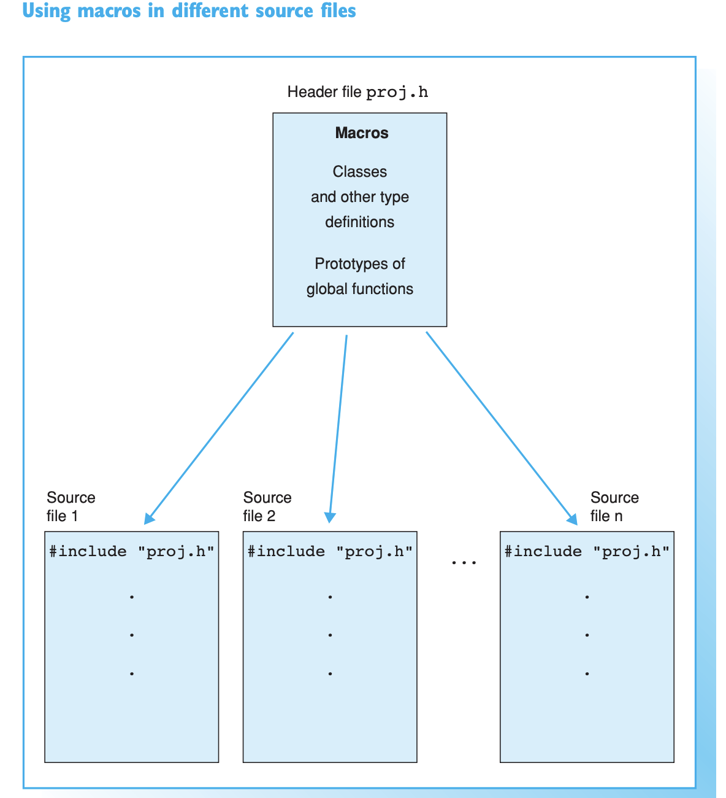
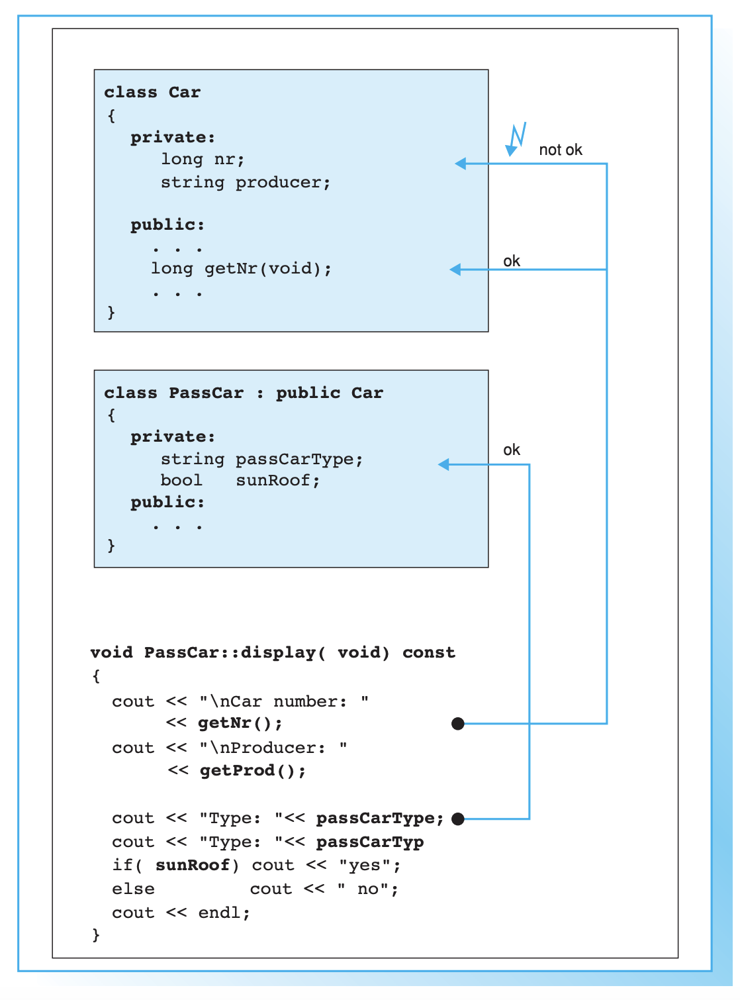
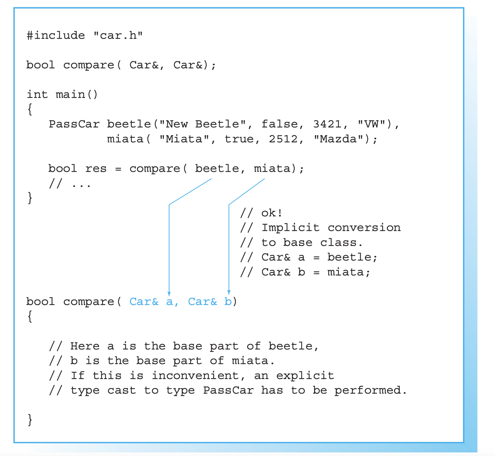
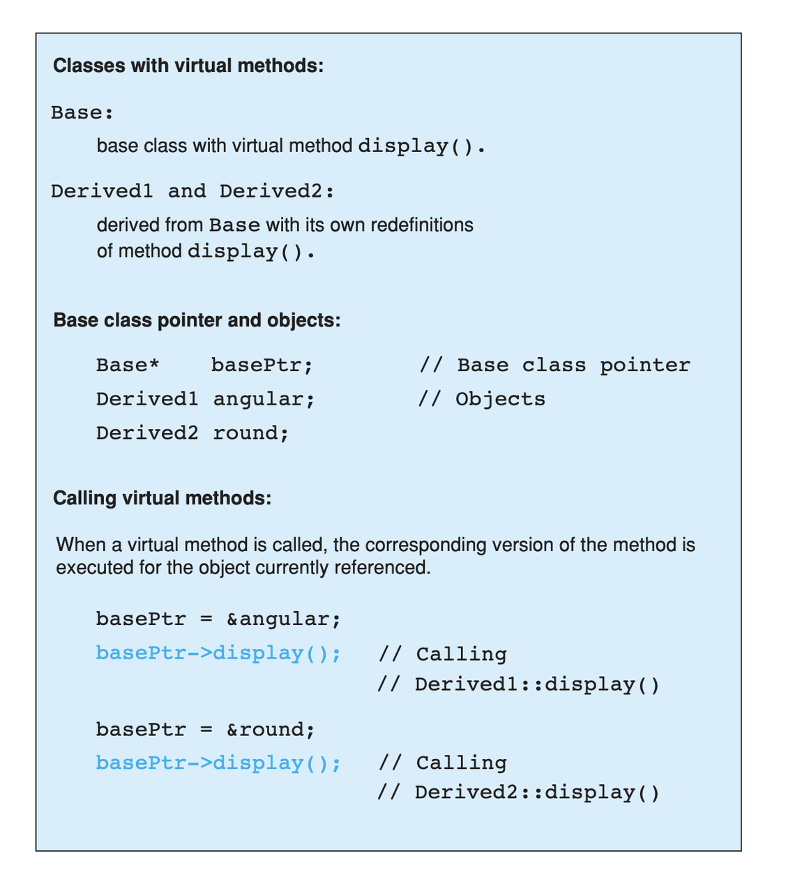

C++ Quick Refresher
Ok. This should be a lesson to you. I did quite some notes two years ago when I was working with it. Also on object oriented programming etc.
Then badaboom; I did not have this blog yet and did not save the notes in the cloud. Turns out that two years later I will have to work a bit in C++ for finishing my thesis and implementing everything into the code. And badaboom; could not work with the previous notes and had to start from scratch.
Plus I am upskilling my OOP knowledge and make it more theoretical. As in one of the interviews I lost quite some points as I was not able to answer quite basic questions of OOP but did not recall all of the names semantics etc. and got under stress.
Reminder of c++
Declaration of pointer
Note that there are two different things you can declare with the
& operator. You should not confuse these. They look similar but
are not.
On the one hand you have references on the other one you have
pointers.
These are not the same and should not be confused.
So on the one hand you have references. These are implemented as follows:
So you have a reference to x.
#include <iostream>
int main(){
float x = 10.7;
float& rx = x;
rx = 8;
printf("the value of the x is: %f ", x);
return 0;
}
So you see that when you modify rx you are actually also
modifying x. This is the entire idea of reference. You have a
new variable referencing the other one.
Note then that there are other subtle things you can do. For
instance passing a reference with const such that you can just
read the referenced variable but you cannot write it itself.
See for instance the below that would yield an error.
#include <iostream>
int main(){
float x = 10.7;
const float& rx = x;
rx = 8;
printf("the value of the x is: %f ", x);
return 0;
}
But check that the following works:
#include <iostream>
int main(){
float x = 10.7;
const float& rx = x;
x = 8;
printf("the value of the rx is: %f ", rx);
return 0;
}
Check at pointers next.
Importance of references in c++
Note that references are especially important in c++ as with it you can specify arguments to pass to functions.
It is actually a fun idea. so you see that there is the difference that you do not have to pass a variable do the operations and return the object at the end of the function with the performed operations and finally assign it again to the memory. you save some operations in this sense.
See also the second benefit of passing by reference:
a function can use the reference parameter to return multiple values to the calling function. Passing by value allows only one result as a return value, unless you resort to using global variables
Such that it is immediate to see why the above is especially important that is straightforward. You can perform operations on Multiple values
Check for instance the following:
#include <iostream>
void test( float& a, float& b) { ++a; ++b;}
int main(){
float x = 10.7;
float y = 1.7;
test(x, y);
printf("the value of the x, y is: %f, %f ", x, y);
return 0;
}
So you see that the above is working as a charm and a is a reference to x in the function.
Note that the return type of a function can also be a referenced object.
Consider the following:
string& message() // Reference!
{
static string str = "Today only cold cuts!";
return str;
}
Then it is immediate to understand that the above would create a reference to a static string with the content defined above.
Then you can also make the referenced objects returned by a
function read only by passing the const operator in the
following way so to say:
const string& message(); // Read-only
It is therefore clear and immediate that c++ as a language allows you a much richer modeling set.
Pointers and Addresses
So here is the syntax for defining pointers.
Recall that a pointer is an expression that represents both the address and type of another object.
You can either note that creating the address operator & for a
given object creates a pointer to that object.
So you can for instance get the address of a defined int var
with the following: &var.
A pointer points to a memory address and simultaneously indicates by its type how the memory address can be read or written to.
You can as well define pointer variables. This are used as variables to store pointers references.
See for instance the following to understand this:
int *ptr; // or: int* ptr; // creates a variable to store a pointer to an int.
After declaring a pointer variable, you must point the pointer at a memory address. The program on the opposite page does this using the statement
ptr = &var;
So once you defined your pointers, as in the following, this is generally the syntax you work with
#include <iostream>
int main(){
double x, y, *px;
px = &x; // Let px point to x.
*px = 12.3; // Assign the value 12.3 to x
*px += 4.5; // Increment x by 4.5.
printf("the value of the x, px: %f, %f ", x, *px);
return 0;
}
So you see that the way you operate with pointers and references is the same. What changes is the fact the one is a distinct object and the other is not.
Notice as well the following syntax for pointer declaration:
long *ptr;
The above essentially means: you create a pointer ptr pointing
to a long* i.e. an address with a long value. This is it essentially.
Note that this is the difference among adress reference &variable
and pointer. A pointer is a separate object. It can changes
referenced object. If you declare a reference when initializing a
variable say a = &x you are creating an alias for the object
x. This reference cannot change at a later point. and the variable
has not an address in memory that references a itself. This is
different when working with pointers.
often references are used when declaring functions. these are passed as arguments. as you do not have to pass entire objects to the function then but rather you point to the objects of interest in memory.
Passing by pointer - this is a third option apart from passing by reference and value.
The idea is the following:
you declare a function parameter to allow an address to be passed to the function as an argument.
you can then do this as follows:
#include <iostream>
using namespace std;
void swap( float *, float *); // Prototype of swap()
int main()
{
float x = 11.1F;
float y = 22.2F;
swap( &x, &y );
printf("value of x: %f \nvalue of y: %f", x,y);
return 0;
}
void swap( float *p1, float *p2) // so notice that you pass a pointer
// to x, and then this extract the
// value in pointer syntax
{
float temp; // Temporary variable
temp = *p1; // At the above call p1 points
*p1 = *p2; // to x and p2 to y.
*p2 = temp;
}
So you can see that this is ultimately extremely close to the reference idea in the way it works. It is just an added layer of customizing and making your code more granular.
Diff point and references
References are similar to pointers: both refer to an object in memory. However, a pointer is not merely an alias but an individual object that has an identity separate from the object it references.
A pointer has its own memory address and can be manipulated by pointing it at a new memory address and thus referencing a different object.
typedef
this is a simple way to give a new name to your specified objects.
For instance you might rephrase an unsigned char to a BYTE by:
typedef unsigned char BYTE
constructors and member initialization functions
factor(factor const& f) :
v_(f.v_), t_(f.t_), c_(f.c_) {
};
This is the member initializer notation.
Understand the initializer notation in the following example:
class Box {
public:
// Default constructor
Box() {} // with no elemnts
// Initialize a Box with equal dimensions (i.e. a cube)
explicit Box(int i) : m_width(i), m_length(i), m_height(i) // member init list
{}
// Initialize a Box with custom dimensions
Box(int width, int length, int height)
: m_width(width), m_length(length), m_height(height)
{}
int Volume() { return m_width * m_length * m_height; }
private:
// Will have value of 0 when default constructor is called.
// If we didn't zero-init here, default constructor would
// leave them uninitialized with garbage values.
int m_width{ 0 };
int m_length{ 0 };
int m_height{ 0 };
};
The general page for understanding constructors is this.
Another example for the constructor is this:
class TelList
{
private:
Element v[MAX]; // The array and the current
int count; // number of elements
public:
TelList(){ count = 0;}
}
sizet
this is used everywhere in the code. and I needed to make sense of it. turns out that it is a standard library method.
std::size_t can store the maximum size of a theoretically possible
object of any type (including array). A type whose size cannot be
represented by std::size_t is ill-formed (since C++14) On many
platforms (an exception is systems with segmented addressing)
std::size_t can safely store the value of any non-member pointer,
in which case it is synonymous with std::uintptrt.
std::size_t is commonly used for array indexing and loop
counting. Programs that use other types, such as unsigned int, for
array indexing may fail on, e.g. 64-bit systems when the index
exceeds UINTMAX or if it relies on 32-bit modular arithmetic.
arrays
#include <iostream>
#include <iomanip>
using namespace std;
int main()
{
const int MAXCNT = 10; // Constant
float arr[MAXCNT], x; // Array, temp. variable so like this you
// declare both the array as the temporal
// variable x as floats.
int i, cnt; // Index, quantity
cout << "Enter up to 10 numbers \n"
<< "(Quit with a letter):" << endl;
for( i = 0; i < MAXCNT && cin >> x; ++i)
arr[i] = x;
cnt = i;
cout << "The given numbers:\n" << endl;
for( i = 0; i < cnt; ++i)
cout << setw(10) << arr[i];
cout << endl;
return 0;
}
An array contains multiple objects of identical types stored sequentially in memory.
The definition includes the array name and the type and number of array elements.
An example:
int myFirstArray[10]; // Array name
If you want to initialize the arrays directly when you initialize them use the following notation passing a list with the elements:
int num[3] = { 30, 50, 80 };
If the array length is explicitly stated in the definition and is larger than the number of initial values, any remaining array elements are set to zero.
Locally defined arrays are created on the stack at program runtime. Arrays that occupy a large amount of memory (e.g., more than one kbyte) should be defined as global or static.
you can also use arrays to save objects of a given class. this can be done in the following way:
<class_name> myArray[10] // where 10 = dimension.
Such class arrays can be initialized using class arrays
Result temperatureTab[24] =
{ // this is your class array. containing all of the objects you
// will save in the array in memory.
Result( -2.5, 0,30,30),
Result( 3.5), // At present time
4.5, // Instead of using a constructor with one argument, you can
// simply supply the argument. The default constructor is
// then called for the remaining elements.
Result( temp1), // Copy constructor
temp2 // Just so
};
If the size of an array is not stated explicitly, the number of values in the initialization list defines the size of the array.
The public interface of the objects in the array is available for use as usual. I.e. you can call methods in the following way:
temperatureTab[2].setTime( 2,30,21);
vectors
Vectors are implemented in the standard template library.
Specifically used to work with dynamic data, C++ vectors may expand depending on the elements they contain. That makes it different from a fixed-size array.
C++ vectors can automatically manage storage. It is efficient if you add and delete data often.
In C++ vectors, automatic reallocation happens whenever the total amount of memory is used.
The syntax for declaring a vector is the following
vector <type> variable (elements)
So for instance
vector <int> rooms (9);
Note that the number of elements is optional. this because as mentioned we can enlarge or decrease the size of the vectors at runtime.
To resize a vector to match a given shape - i.e. number of elements use the following structure:
rooms.resize(shape)
check at the initializer with -1 and understand what this -1
is exactly doing:
#include <vector>
#include <iostream>
int main(){
std::vector<int> hello(8, -1); // so notice that the second argument is the intializator number for the vector.
std::cout << hello[2] << std::endl;
printf("check at the size of this vector: %d", hello[2]);
return 0;
}
templates
check at this video for understanding templates. basically it is nothing new. you just specify blueprints that you can then call by name. the properties are then derived for such a template.
conditional operator
I guess this is as in your javascript notes.
This basically means if the expression m_evidence.empty()
evaluates to true then return false otherwise return true
bool plainEvidence = (m_evidence.empty() ? false : true);
some standard functions
std::copy(m_lockedFactors.begin(), m_lockedFactors.end(),
std::ostream_iterator<int>(std::cout, " "));
like this you pass each of the locked factors from begin to end to the set to the ostreamiterator that would then cout these.
linker
puahh.. I recall that was messy. I have to ask again the pc to martina to get back all of my notes and build on that. was quite annoying with the linker stuff etc.
Macros
There is no big point for Macros to this stage. You can generally think as them as global variables and functions.
So I mean the point for it is normal. Nothing new.
You usually define a header file where you define all of the Macros relevant for your program. Then you import the header to the relevant scripts of your program.
bNote that the Macros has benefit in the way they are operated by the compiler. This goes low level and is not that interesting to me at the moment.
Note that you can use with conditional inclusion when working
with Macros. The idea is to tell the compiler to just compile the
section if a the macro is defined…
#ifdef name
. . . // Block, which will be compiled
// if name is defined.
#endif
Note that you can also work with #ifndef there the idea is to
compile the source block up until the next #endif statement.
See for instance in this sense in Merlin the following strucutre
/*
* util.h
*
* Created on: 24 Mar 2015
* Author: radu
*
* Copyright (c) 2015, International Business Machines Corporation
* and University of California Irvine. All rights reserved.
*
* THIS SOFTWARE IS PROVIDED BY THE COPYRIGHT HOLDERS AND CONTRIBUTORS "AS IS"
* AND ANY EXPRESS OR IMPLIED WARRANTIES, INCLUDING, BUT NOT LIMITED TO, THE
* IMPLIED WARRANTIES OF MERCHANTABILITY AND FITNESS FOR A PARTICULAR PURPOSE ARE
* DISCLAIMED. IN NO EVENT SHALL THE COPYRIGHT HOLDER OR CONTRIBUTORS BE LIABLE
* FOR ANY DIRECT, INDIRECT, INCIDENTAL, SPECIAL, EXEMPLARY, OR CONSEQUENTIAL
* DAMAGES (INCLUDING, BUT NOT LIMITED TO, PROCUREMENT OF SUBSTITUTE GOODS OR
* SERVICES; LOSS OF USE, DATA, OR PROFITS; OR BUSINESS INTERRUPTION) HOWEVER
* CAUSED AND ON ANY THEORY OF LIABILITY, WHETHER IN CONTRACT, STRICT LIABILITY,
* OR TORT (INCLUDING NEGLIGENCE OR OTHERWISE) ARISING IN ANY WAY OUT OF THE USE
* OF THIS SOFTWARE, EVEN IF ADVISED OF THE POSSIBILITY OF SUCH DAMAGE.
*/
/// \file util.h
/// \brief Various utilities
/// \author Radu Marinescu radu.marinescu@ie.ibm.com
#ifndef IBM_MERLIN_UTIL_H_
#define IBM_MERLIN_UTIL_H_
// code.....
// code.....
#endif // re-include
So I do not see exactly the point of why this is used. but probably cause you might call this from multiple places in the code such that it is just complied one time.
This is in fact what happens above as:
A symbol without a substitute text is often used to identify header files and avoid multiple inclusion.
Object Oriented Programming
This has a quite easy syntax. Think for instance to the following:
// car.h: Definition of baseclass Car and
// of the derived class PassCar
// --------------------------------------------------
#include <iostream>
#include <string>
using namespace std;
class Car // Base class
{
private:
long nr;
string producer;
public:
// Default Constructor:
Car( long n = 0L, const string& prod = "");
// Access methods:
long getNr(void) const { return nr; }
void setNr( long n ) { nr = n; }
const string& getProd() const{ return producer; }
void setProd(const string& p){ producer = p; }
void display( void ) const; // Display a car
};
class PassCar : public Car // Derived class
{
private:
string passCarType;
bool sunRoof;
public:
// Constructor:
PassCar( const string& tp, bool sd,
int n = 0 , const string& h = "");
// Access methods:
const string& getType() const{ return passCarType; }
void setType( const string s) { passCarType = s; }
bool getSunRoof() const { return sunRoof; }
void setSunRoof( bool b ) { sunRoof = b; }
void display() const;
};
So you see the syntax. You have a function with the class name in order to create the class.
Then you have simply functions; these are the methods of the
class. As long as they are in the public space they can be
accessed by the usual . notation.
Notice the following important characteristic of the derived classes:
I.e. just the public methods are available in the derived class.
This ultimately means that methods belonging to derived classes only have indirect access to the private data members of the base class.
Note that then you can instantiate an object of a class and perform operations on it via the following syntax:
void PassCar::display( void) const{
cout << "\nCar number: "
<< getNr();
cout << "\nProducer: "
<< getProd(); // note that here you do not have to pass the object as being called from within a constructor what this actually evaluates to is with pointer syntax this->getProd()
cout << "Type: "<< passCarType;
cout << "Type: "<< passCarTyp
if( sunRoof) cout << "yes";
else cout << " no";
cout << endl;
}
Private, protected and public variables and methods
when you make this division you decide from where to expose the data and methods associated to a method.
I.e. public it is accessible from everywhere. I.e. even when
running the code inside of the class code - i.e. in a method of
it - you might access the variable.
I.e. private you might just access to the methods and variables
from the very same class they are declared in. I.e. through
methods specified in there etc.
I.e. protected you might just access to the methods and variables
from the very same class they are declared in as well as classes
derived from such class.
In this sense understand the strucutre of your c++ projects. You specify the structure and variables in header files together with the access properties. This will make it much easier for you to get all of the structure in a quick way.
Based on that you would then expand and write the actual code etc.
Name Lookup
This are general questions you should know the answer for. Last time at the interview you were tricked by it.
When the compiler finds a function as the getProd() above, the
usual way to evaluate it is the following:
- the compiler looks for the name of the method called in the derived class first
- if the name cannot be found, the compiler walks one step up the tree and looks for a public method with that name.
This has important consequences, as when defining a derived class you can overwrite some methods.
if a member is redefined in a derived class, it will mask the corresponding member in the base class.
Overloading
Note that you can have multiple methods with the same name but different arguments. Such that you can keep redefining within the same class.
This is termed overloading.
Even if you have redefined a method in a derived class, you can
still call the method in the parent class calling:
bas_class::derived_class();
This in the code for a derived class object.
Object initialization
Notice that in the classes above you have specified default constructors. You can however specify other constructors.
The constructor of a derived class is required to create an object of the derived class type.
To initialize a constructor for the derived class you must
pass all of the elements necessary to construct an object of the
derived class. In this case the two strings, one bool and one
int.
// first version
PassCar::PassCar(const string& tp, bool sr, int n,
const string& hs) /// so notice there that you have to pass everything.
{
// here implicitly the default constructor is called //
// then you specify the arguments for your class as follows //
setNr(n); // Initial values for data
setProd(hs); // members of the base class.
passCarType = tp; // Initial values for data memsunRoof = sr; // bers of the derived class
}
Notice that the above is not the usual recommended method.
This because of the following. The default constructor must be available in the base class. Moreover, initialization with incorrect values before assigning live values impacts the response of the program. I.e. you might get errors in that phase.
In this sense a better initialization method is the following
// Second version of the constructors of PassCar
// ----------------------------------------------------
PassCar::PassCar(const string& tp, bool sr, int n,
const string& hs) : Car( n, hs) // so notice that this is how you define the initialization of an object
{
passCarType = tp; // Initial values for data memsunRoof = sr; // bers of the derived class
}
Note that the third way to initialize an object via a class is with the following syntax:
// Third version of the constructor of PassCar
// ----------------------------------------------------
PassCar::PassCar(const string& tp, bool sr, int n,
const string& hs)
: Car( n, hs), passCarType( tp ), sunRoof( sr ) // so notice the
// syntax. with a
// comma separed
// values and taking
// the arguments from
// the first object
{
// There remains nothing to do
}
The only thing that you have to understand is that you start creating an object passing all of the arguments necessary for the base class constructor and then you expand from this core outwards.
Note that in a similar way when the an object is destroyed, the destructor of the derived class is first called, followed by the destructor of the base class. The reverse order of the constructor calls applies.
Notice the power of C++ and Java with their type declared
variables. With such constructors defined in the car.h file you
can then instantiate object, for instance as const. In such a
way you might just be able to call reading methods for the
objects. But when calling methods trying to modify the object you
get errors.
Calling Redefined Methods
Note that when calling a redefined method, defined in multiple classes, you would actually access the method of the class the object belongs to.
Nothing new in this sense and makes totally sense.
Implicit Conversion among Objects
Note that when you have objects of derived classes you have implicitly defined the characteristic of the object belonging to the base class - so to say.
In this sense it is interesting that you can define methods that access the base object from an object instantiated from the derived class.
Think for instance to the following strucutre:
This is a very interesting use case in that the above allows you to access an object of base class from an object of the derived class.
So given this possibility the question is when the conversion takes place?
And basically there are the following cases where the conversion takes place:
- when you assign derived objects to baseclass objects
- pointers and references to the base class
You can see an example in the picture above. There you see that you pass by reference as in the image above is the following: you are in fact creating a reference to a in the form of an object of base class. And note that the above works well even in the arguments of a function - but recall in this sense the peculiarity of c++ when you pass objects in there.
The other mentioned possibility is the one of assigning directly to an object of the base class. Think for instance to the following:
Car auto;
PassCar bmw("520i", true, 4325, // derived class
"Bayerische Motorenwerke");
auto = bmw; // convert derived class object to base class object
The last method - the one of pointer is the more annoying.
There the idea is to pass the address of derived class object and set a pointer of base class to it.
Then through such a pointer you will just be able to access base
class methods with that weird arrow -> notation.
Check the following to understand properly:
Car* carPtr = &cabrio; // cabrio object of derived class
carPtr -> display(); // display method of base class.
carPtr->setSunRoof(false); // Error; method of derived class. cannot be accessed.
// Note that the following is also an error
PassCar auto; // derived class
auto = *carPtr; // Error! Pointer to derived object; true. But of **Base** class
It is also possible to downcast. However this is not recommended. Avoid it.
There you have to make the casting explicitly. Check at it online in case of interest.
Polymorphism
That is plenty in this project is the idea that depending on the method arguments (with possible overloading) the method performs different tasks.
Come from greek multiform.
The general case is the following. You have a base class with a virtual method. This is essential for polymorphic structures as we will see next.
Consider in fact the following:
So what you have is a pointer to a base class. Then recall that when you have a pointer of base class type and you assign to this a derived object you can just call base class methods.
So what you actually have in the above picture is an invocation of the base class virtual method.
Virtual methods are then quintessential to the idea of polymorphism in the sense that when they are invoking what you actually call is still the method of the derived class.
So notice that this goes against the idea of data conversion we previously discussed but for some methods (the one where you define the virtual method) it might well make sense to have such a behaviour.
This for instance in the case of the display method as in the
example above. There you do not want to just get the base
attributes of the base class object but you might want to get the
attributes of the object of interest. By allowing virtual classes
you will make sure that the right method will be called getting
all of the arguments depending on the object sub-class. In this
sense the invocation of the method of the base class becomes
polymorphic and adjusts to the object class type referred.
Virtual methods are defined declaring the virtual type class;
see for instance the following example:
Note that when defining the method of the derived classes, they should be virtual as well. However, notice that you can omit the virtual keyword there. The compiler will understand that by its own as recall that it starts building the object from the inside to the outside; i.e. from the base class on. Don't think it in the opposite direction though - a base class method does not become virtual just because it is declared as virtual in a derived class.
However, note the following important point:
If you use a different signature or return type of a virtual base class method to define a method in a derived class, this simply creates a new method with the same name. The method will not necessarily be virtual!
Note as well the following: If you use a base class pointer to manage an object, the appropriate virtual methods of the derived class are called. However, non-virtual methods will always execute the base class version.
This goes together with the static and dynamic memory allocation when calling virtual and non-virtual methods.
Note as well that if a virtual method is called via an object’s name, the appropriate version of this method is also known at time of compilation. So this is also a case of early binding.
When a non-virtual method is called, the address of the function is known at time of compilation. The address is inserted directly into the machine code. This is also referred to as static or early binding.
This in contrast to the case of making the call via pointers to the base classes and the virtual method. Then dynamic memory allocation occurs.
Note moreover that there quite some few low level stories that you will have to well manage. i.e. if you have a pointer to the base class, which you assign an object of a derived class, and then subsequently delete such pointer, i.e.
Car *carPtr;
carPtr = new PassCar("500",false,21,"Geo");
. . .
delete carPtr;
then the destructor for the base class is called but not for the derived class. As the PassCar destructor is not called, neither is the destructor called for the data member passCarType, which is additionally defined in the derived class. The data member passCarType is a string, however, and occupies dynamically allocated memory— this memory will not be released.
So be careful:
If multiple objects are created dynamically in the derived class, a dangerous situation occurs. More and more unreferenced memory blocks will clutter up the main memory without you being able to reallocate them—this can seriously impact your program’s response and even lead to external memory being swapped in.
The solution to this is to use virtual destructors. The idea with such virtual destructors is that in such a way, just like any other virtual method, the appropriate version of the destructor will be executed.
Note the following important piece:
A class used as a base class for other classes should always have a virtual destructor defined. Even if the base class does not need a destructor itself, it should at least contain a dummy destructor, that is, a destructor with an empty function body.
Data Abstraction
Here the idea is to create a class describing the objects.
I.e. you will define a class with all of the relative virtual methods that will pose the structure and base for all of the derived methods.
That is basically very quickly the idea, when you keep it to the bone.